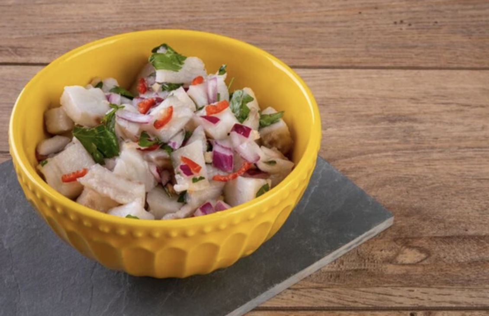

Ceviche

Ingredients
- 1000 grams of fish of your choice, diced into small cubes
- 300 grams medium onions, finely chopped
- 300 grams sweet red peppers, finely chopped
- 30 grams cilantro, very finely chopped
- 300 milliliters lemon juice (approximately 15 lemons)
- Salt to taste
Instructions
- In a large bowl, place the thawed fish and cover it completely with the lemon juice. Stir well to ensure all the fish is in contact with the juice.
- Add the chopped onion and pepper to the fish, mixing carefully to distribute the ingredients evenly.
- Verify that the lemon juice completely covers the fish. If necessary, add more lemon juice.
- Add the chopped cilantro and salt to taste. Stir again until everything is well incorporated.
- Let the mixture rest in the refrigerator for two hours so that the fish marinates and cooks in the lemon juice.
- Serve the ceviche accompanied by soda crackers, fried green plantains, and sauces to taste.
Servings
5-7 servings